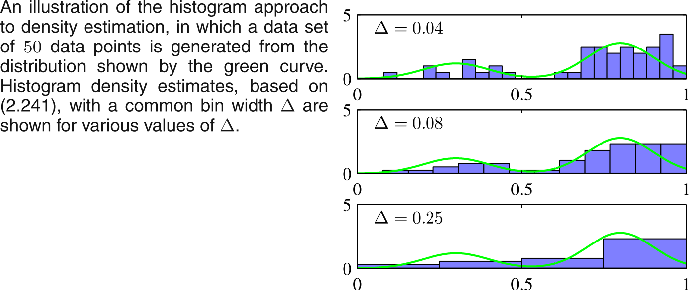
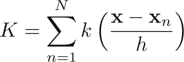
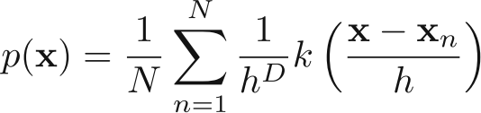
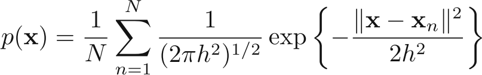
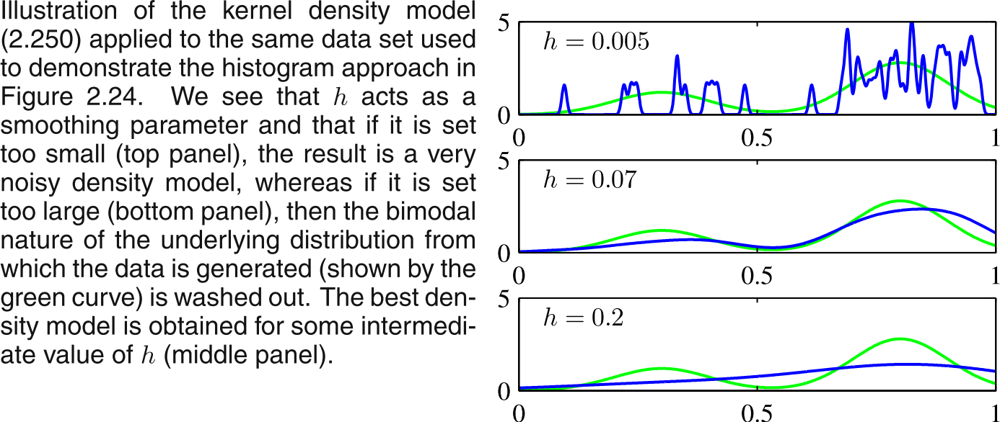

Nonparametric Methods
Usually in ML we assume that data is coming from some distribution, and thus we try to find the parameters of the distribution. However an important limitation of this approach is that the chosen density might be a poor model of the distribution that generates the data (like try to model a data generated from multimodal distribution by a single gaussian), which can result in poor predictive performance.
Moreover, we intuitively feel that probability density at a particular location, would depend on the relative number of the datapoints present in that neighbourhood. Some of the ways (methods) we could then estimate the probability would be:
Histogram approach
Simply divide the space in bins and estimate the probability of the bins as number of points falling in that bin, it is illustrated in example below (Taken from Bishop, Fig 2.24):

Apart from the choice of the $\Delta$, another issue with this method is location of center of $\Delta$ can also make the function discontinuous.
Kernel method
We can extend the histogram method. Suppose K out of N points are present in volume V. Then density estimat is given as:
p(x) = $\frac{K}{NV}$
Definng the Parzen window kernel function k(u), (aka which woudl be 1 inside |u$_i$|/2 from origin), we get:

This gives probability estimate as:

The above equation can be re-interpreted as sum of N cubes centered over each data points. Please note the choice of K (called kernel) as a cube would make it a window method.
To avoid the presence of Artificial discontinuties, we can choose a Gaussain kernel (or any smoorther kernel). Choosing gaussian Kernel would give the probability distribution as:

Thsi would give an estimate as (again taken from Bishop, Fig 2.25)

Nearest-neighbour methods
Needs not much of explanation.